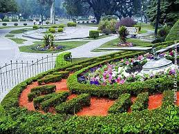

Tucuman
La Basílica Nuestra Señora de la Merced, también llamada Parroquia la Victoria, es una Basílica Menor de la ciudad de San Miguel de Tucumán.Con un estilo neocolonial, se caracteriza por poseer un interior muy armonioso y consecuente con su historia. El camarín de la basílica fue declarada Monumento Histórico Nacional y se conserva en ella la imagen de Nuestra Señora de la Merced, proclamada Generala del Ejército Argentino por Manuel Belgrano. El General, a cargo del Ejército de Norte, la invocó antes de enfrentar al Ejército realista, en el campo de Las Carreras (actual plaza Belgrano), el 24 de Setiembre de 1812. Tras su triunfo entregó su bastón de mando a la Virgen y le rindió honores, convirtiéndose el templo en “Parroquia de la Victoria”.
Dentro del Parque se encuentra el Museo de la Industria Azucarera en la que fuera la Casa del Obispo Colombres, el Reloj Floral, el lago, el Rosedal, algunas facultades, clubes y lugares de esparcimiento, entre otros.

La Casa de Gobierno de Tucumán es un monumento histórico nacional y sede del gobierno provincial de Tucumán, en la ciudad de San Miguel de Tucumán, Argentina.